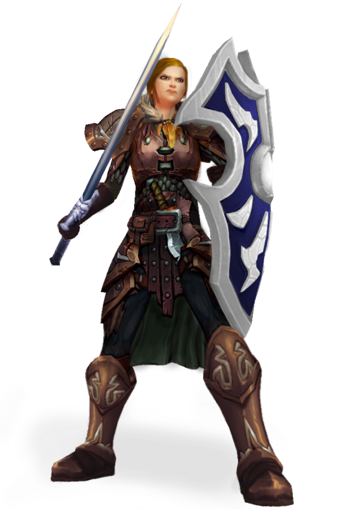

Menschen
Von allen zivillisierten Rassen sind Menschen die anpassungsfähigste
und vielfälltigste. Ihre Siedlungen findet man praktisch überall, und
die menschlichen Moralvorstellungen, Gebräuche und Interessen sind sehr variabel.

Durchschnittliche Größe: 1,65 - 1,85 m
Durschnittliches Gewicht: 60 - 110 kg
Attributswerte: + 2 auf ein Attribut ihrer Wahl
Größenklasse: Mittel
Bewegungsrate: 6 Felder
Sicht: Normal
Sprachen: Handelssprache und eine weitere Sprache
Verbesserte Verteidigungswerte: Ein Mensch erhält +1 auf die
REF-, WIL- und ZÄH-Verteidigung.
Zusätzliche Fertigkeit: Ein Mensch kann eine zusätzliche
Fertigkeit von seiner Klassenfertigkeitsliste erlernen
Zusätzliche freiverfügbare Kraft: Ein Mensch beherrscht
eine zusätzliche frei verfügbare Angriffskraft der 1. Stufe seiner Klasse.
Zusätzliches Talent: Ein Mensch kann auf der 1. Stufe ein Bonustalent
auswählen. Natürlich muss er alle Vorraussetzungen für das Talent erfüllen.
Spiele einen Menschen, wenn du möchtest, dass dein Charakter
- entschlossen und anpassungsfähig ist und über
den Mut und Ressourcen verfügt, sich jeder
Herausforderung zu stellen.
- bei der Charaktererschaffung flexibler ist als andere.
- es in jeder Klasse zur Meisterleistung bringen kann.
Elfen
Die Elfen beschützen die Wälder, ihre Heimat, indem sie Eindringlinge aus
den Schatten heraus mit tödlichem Pfeilhagel eindecken. Ihre Behausungen fügen
sich harmonisch in den 'Wald ein. Oft ist diese Harmonie so perfekt, dass Reisende
erst merken, dass sie eine elfische Gemeinde betreten haben wenn es zu spät ist.
Durchschnittliche Größe: 1,60 - 1,80 m
Durschnittliches Gewicht: 60 - 80 kg
Attributswerte: Geschicklichkeit +2, Weishei +2
Größenklasse: Mittel
Bewegungsrate: 6 Felder
Sicht: Dämmersicht
Sprachen: Elfisch, Handelssprache
Fertigkeitsboni: Naturkunde +2, Wahrnehmung +2
Feenursprung: Elfen gelten als Feenwesen wenn die Rassen des Ziels bei der Abwicklung
eines Effekts eine Rolle spielt.